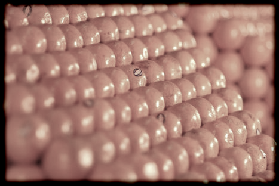

"Stacks of oranges in a supermarket" are of particular mathematical interest. This is the sphere packing with the provably highest density. (This fact was already conjectured by Johannes Kepler in 1611. However it could be proven only as late as in 1998 by Thomas Hales with massive aid of computers). It is not by accident that this placement of objects quite often arises as atomic conformation in regular crystals. The program on the right allows to visualize these packing structures and several substructures of it.
|
 |
Stack of oranges in a Chinese supermarket